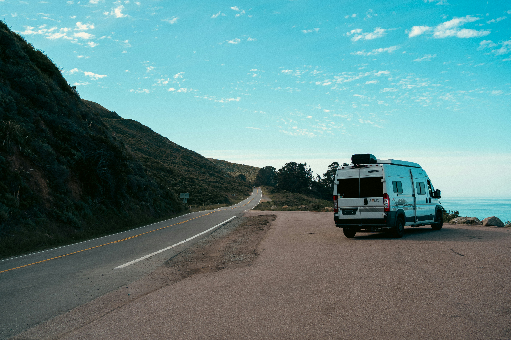

Getting Around
Renting a car is a great way to explore California, especially when visiting beaches, national parks, and scenic coastal roads.
Useful tips to help you enjoy your California adventure.
A little planning can make your California trip easier, more comfortable, and more enjoyable.

Renting a car is a great way to explore California, especially when visiting beaches, national parks, and scenic coastal roads.
California can have different weather depending on the region. Bring comfortable clothes, sunscreen, and a light jacket for cooler evenings.
Popular attractions and national parks can become busy. Check opening hours and make reservations when necessary.
Bring a reusable water bottle, especially when hiking or spending time outdoors in warm weather.